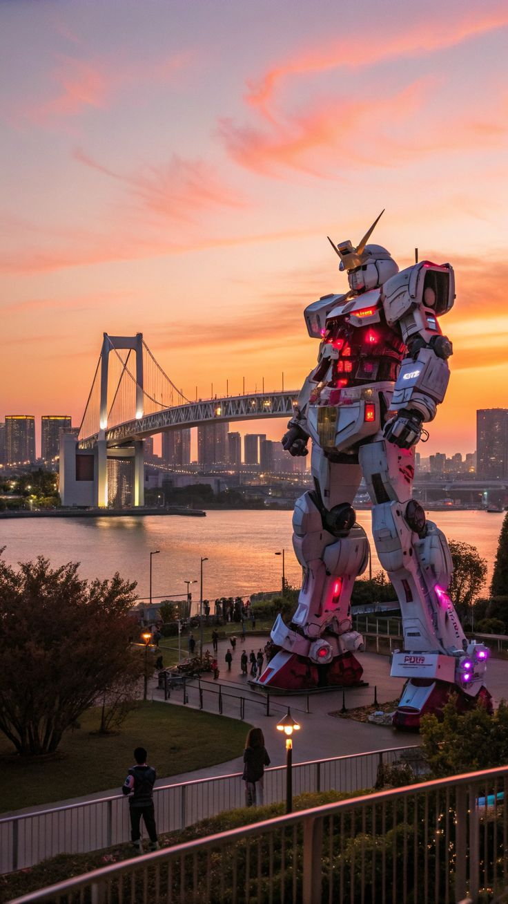
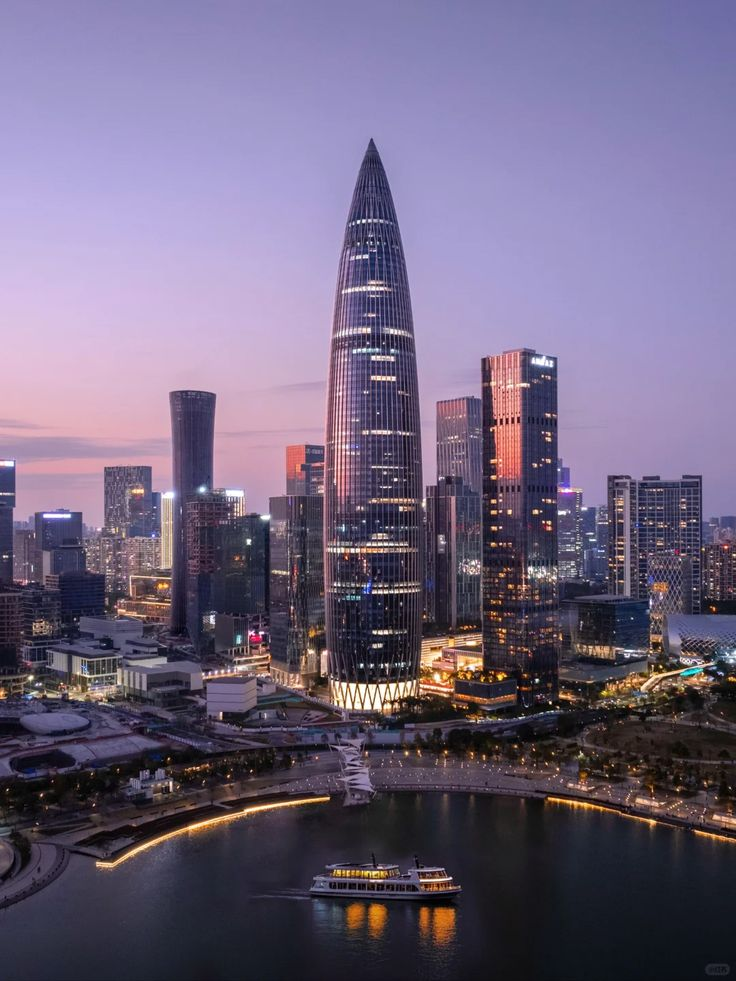
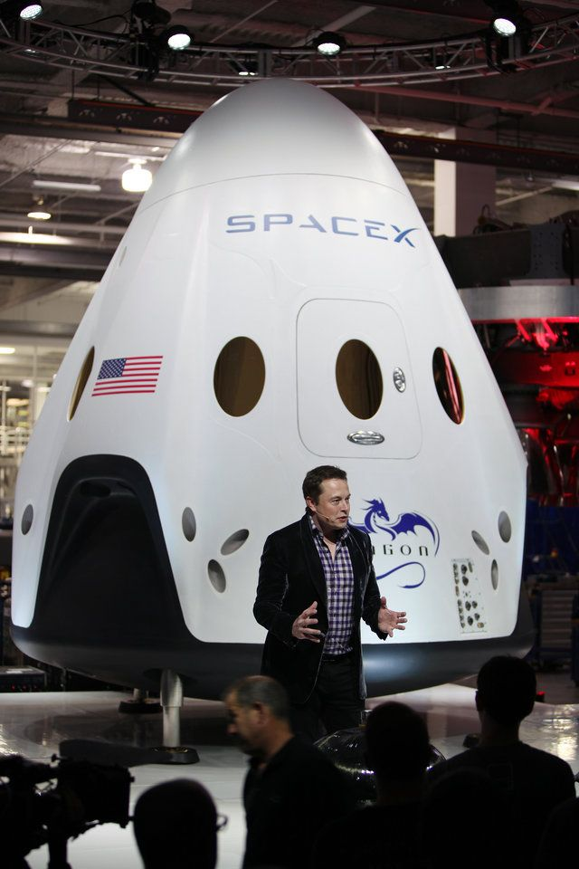
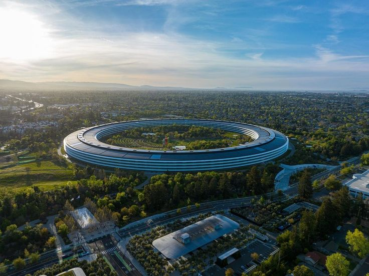
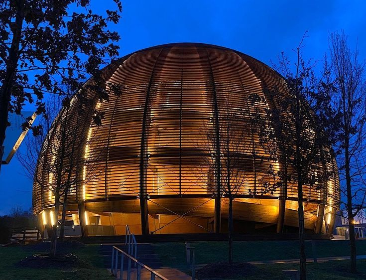
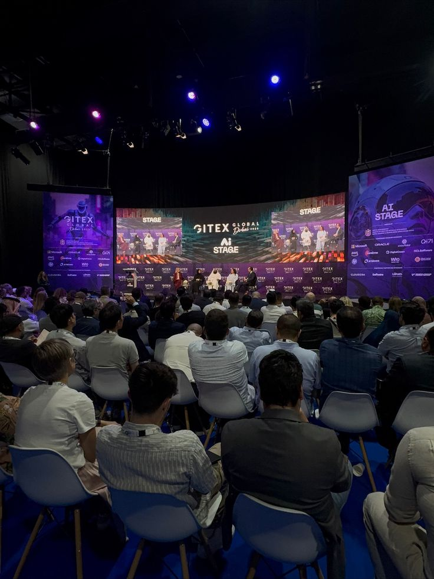

Impacto Cultural
Intercambiar tradiciones conlleva un riesgo de perder la identidad cultural local.
Presentación de mi viaje






Explora los lugares que visité
📅 Días 1 – 3 del viaje
Ibis Saint-Genis-Pouilly Genève — ubicado en la frontera con Francia, a minutos del CERN. Precio medio: 110 €/noche.
📅 Días 4 – 7 del viaje
Rove Downtown Dubai — hotel de diseño moderno e hiperconectado, ideal para nómadas digitales. Precio medio: 95 €/noche.
📅 Días 8 – 12 del viaje
The Langham Shenzhen (o alternativas de negocios en Futian), cerca de los distritos financieros y tecnológicos. Precio medio: 75 €/noche.
📅 Días 13 – 16 del viaje
Henn na Hotel Tokyo Asakusabashi — atendido por robots animatrónicos en recepción y con sistemas domóticos avanzados. Precio medio: 85 €/noche.
📅 Días 20 – 21 del viaje
The Domain Hotel en Sunnyvale o CitizenM San Francisco Union Square — check-in automatizado y diseño tecnológico. Precio medio: 175 €/noche.
📅 Días 17 – 21 del viaje
The Domain Hotel en Sunnyvale o CitizenM San Francisco Union Square — check-in automatizado y diseño tecnológico. Precio medio: 175 €/noche.
21 días, 6 destinos, 1 viaje tecnológico
Ibis Saint-Genis-Pouilly · 110 €/noche
Rove Downtown Dubai · 95 €/noche
The Langham Shenzhen · 75 €/noche
Henn na Hotel Tokyo Asakusabashi · 85 €/noche
The Domain Hotel, Sunnyvale · 175 €/noche
CitizenM San Francisco Union Square · 175 €/noche
Detalles de mis gastos durante el viaje
Ruta: Madrid-Ginebra-Dubái-Shenzhen-Tokio-San Francisco-Madrid
21 noches = 90$/noche
Total: 6430$
Promedio 55$ al día
Total: 4080$
Intercambiar tradiciones conlleva un riesgo de perder la identidad cultural local.
El turismo puede generar ingresos pero... ¿y la gentrificación?
Los aviones y su contaminación, además de los residuos generados por el turismo.
"Viajar ya no solo consiste en descubrir lugares"
"Cada turista transforma la cultura"
"El destino final siempre es una nueva forma de mirar"